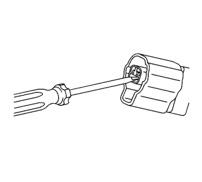
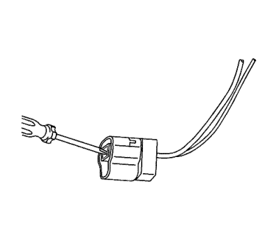

Conectores Yazaki bidireccionales
Herramientas especiales
Si desea informarse sobre herramientas regionales equivalentes, consultar Herramientas especiales .
Procedimiento de extracción de terminales
- Separe el conector del componente.

- Introduzca una herramienta pequeña de punta plana en la ranura situada debajo del seguro de posición de terminal (TPA) cargado por delante y apalanque hacia arriba.
- Extraiga el TPA tirando de él fuera del conector.
- Empuje el lado del cable del terminal que va a extraerse hacia el conector y sujételo en esta posición.

- Introduzca la herramienta EL 38125-553 en un ángulo pequeño hacia arriba en la cavidad situada debajo del terminal que va a extraerse. Asegúrese de que la punta del extremo de la herramienta está dirigida a la parte inferior del terminal y está en contacto con el terminal hasta que se detiene en el retén plástico del terminal.

- Separe con cuidado el retén plástico del terminal hacia abajo y empuje con cuidado el teminal fuera del conector. Recuerde siempre que nunca debe utilizar la fuerza a la hora de retirar un terminal de un conector. Si resulta difícil extraer el terminal, repita todo el procedimiento.
Reparación de cable con terminación
- Extraiga el terminal.
- Encuentre el cable con terminación adecuado.
- Utilice los casquillos de empalme adecuados en función del tamaño.
- Consultar Empalme de hilos de cobre usando casquillos de empalme .
| © Copyright Chevrolet. Reservados todos los derechos |